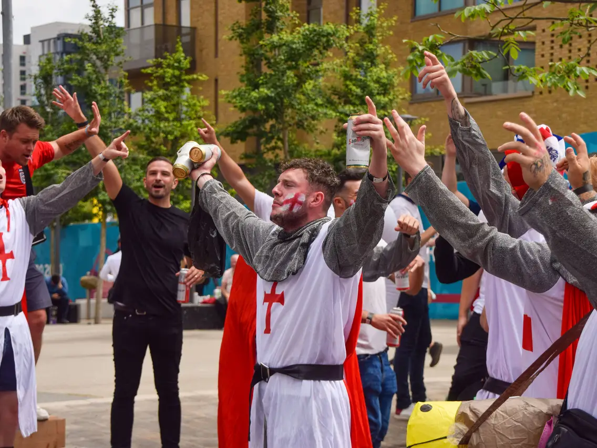

This Is For Proper British Geezers Only
Step into a world where tradition meets modernity, where resilience and charm converge, and where the spirit of Britain's finest shines through. Proper British Geezers is your digital gateway to the heart and soul of the British way of life.

Examples Of Some Proper British Geezers

A British Geezer at the game, surrounded by his fellow Brits

A British Geezer with a great display of patriotism

British Geezers dressed as crusaders at the Qatar WC, ready to take back the holy land

Some British Geezers indulging in their British culture,
Oi, mate, life's a proper rollercoaster, innit? You gotta take the ups with the downs and keep that stiff upper lip, 'cause in the end, we're all just trying to have a laugh and a pint down at the local.
-Derrick, Barnsley FC Fan
Become A Proper British Geezer! It's Time!
Buy Yourself a St Georges Flag and a England Footy Jersey Today!